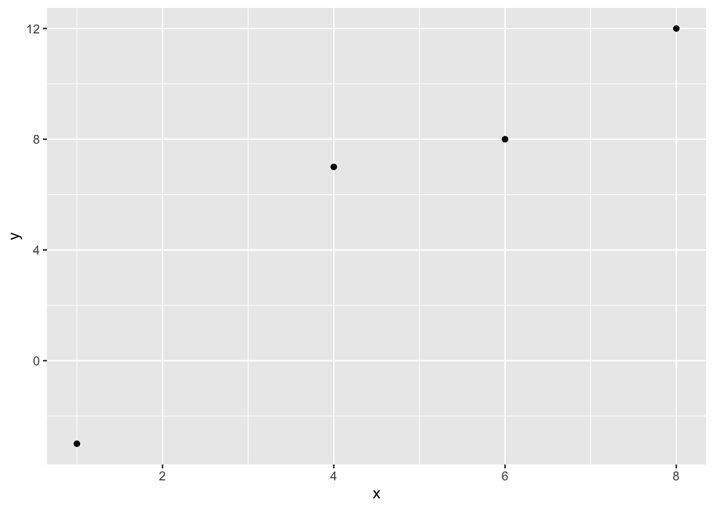
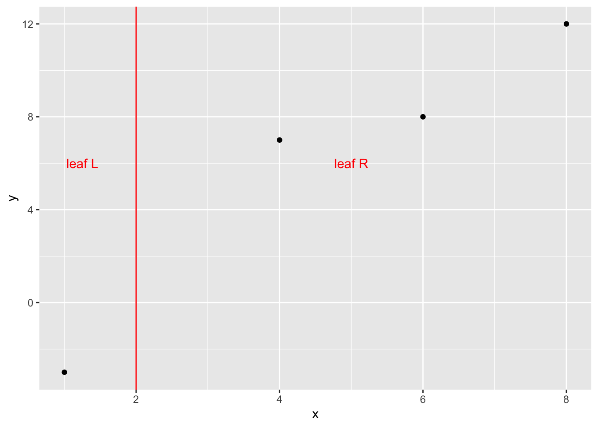
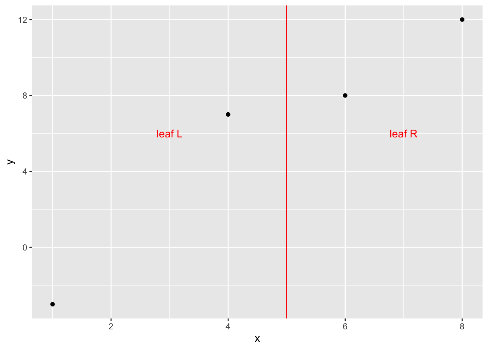
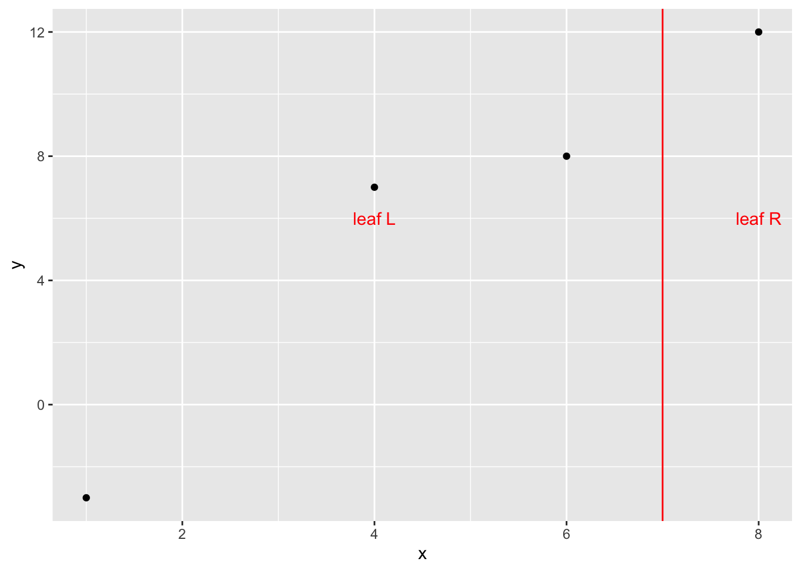
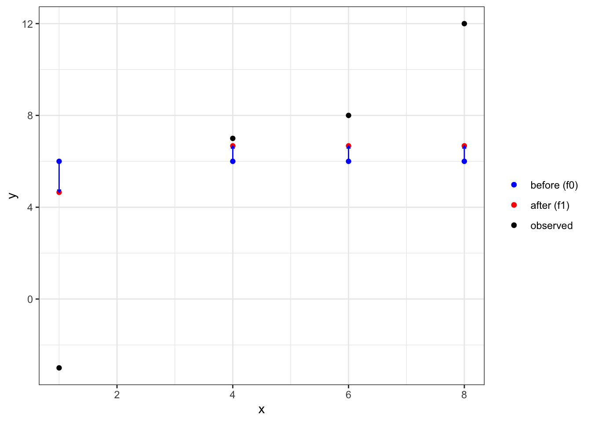
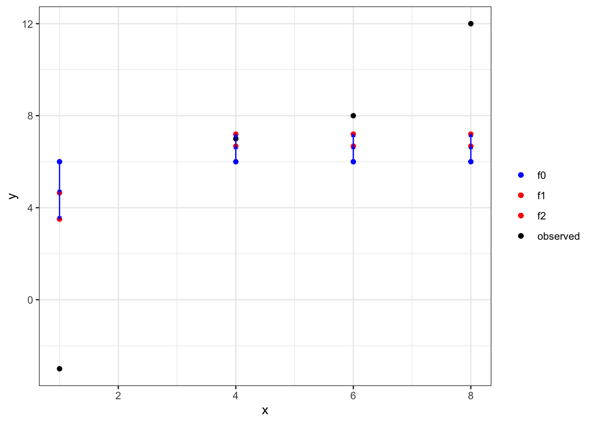

9 Extreme Gradient Boosting
Extreme gradient boosting (XGB) is a variant of gradient boosting that has been extremely popular due to its superb performance. The basic concept is the same as the gradient boosting algorithm described above, however, it has its own way of building a tree, which is more mindful of avoiding over-fitting trees.
Preparation
9.1 Tree updating in XGB (general)
Let \(f_{i,b}(x_i)\) be the prediction for the \(i\)th observation at the \(b\)-th iteration. Further, let \(w_t(x_i)\) is the term that is added to \(f_{i,b}(x_i)\) to obtain \(f_{i,b+1}(x_i)\). In XGB, \(w_t(x_i)\) is such that it minimizes the following objective:
\[ \Psi_t = \sum_{i=1}^N [L(y_i, f_{i,b}(x_i) + w_t(x_i))] + \Omega(w_t) \tag{9.1}\]
where \(L()\) is the user-specified loss-function that is differentiable and \(\Omega(w_t)\) is the regularization term. Instead of Equation 9.1, XGB uses the second order Taylor expansion of \(L()\) about \(w\)1.
\[ \tilde{\Psi}_t = \sum_{i=1}^N [L(y_i, f_{i,b}(x_i)) + g_i w_t(x_i) + \frac{1}{2}h_i w_t(x_i)^2] + \Omega(w_t) \tag{9.2}\]
where \(g_i = \frac{\partial L(y_i, p_i)}{\partial p_i}\) (first-order derivative) and \(h_i = \frac{\partial^2 L(y_i, p_i)}{\partial p_i^2}\) (second-order derivative). Since \(L(y_i, f_{i,b}(x_i))\) is just a constant, we can safely remove it from the objective function, which leads to
\[ \tilde{\Psi}_t = \sum_{i=1}^N [g_i w_t(x_i) + \frac{1}{2}h_i w_t(x_i)^2] + \Omega(w_t) \tag{9.3}\]
Let \(I_j\) denote a set of observations that belong to leaf \(j\) (\(j = 1, \dots, J\)). Then, Equation 9.3 is written as follows:
\[ \tilde{\Psi}_t = \sum_{j=1}^J\huge[\normalsize (\sum_{i\in I_j}g_i)w_j + \frac{1}{2}(\sum_{i\in I_j}h_i + \lambda)w_j^2 \huge]\normalsize + \gamma J \tag{9.4}\]
Remember that all the observations in the same leaf shares the same prediction. So, for all \(i\)s that belong to leaf \(j\), the prediction is denoted as \(w_j\) in Equation 9.4. That is, \(w_t(x_i)\) that belongs to leaf \(j\) is \(w_j\).
For a given tree structure (denoted as \(q(x)\)), the leaves can be treated independently in minimizing this objective.
Taking the derivative of \(\tilde{\Psi}_t\) w.r.t \(w_j\),
\[ \begin{aligned} (\sum_{i\in I_j}g_i) + (\sum_{i\in I_j}h_i + \lambda)w_j = 0 \\ \Rightarrow w_j^* = \frac{-\sum_{i\in I_j}g_i}{\sum_{i\in I_j}h_i + \lambda} \end{aligned} \tag{9.5}\]
The minimized value of \(\tilde{\Psi}_t\) is then (obtained by plugging \(w_j^*\) into Equation 9.4),
\[ \begin{aligned} \tilde{\Psi}_t(q)^* & = \sum_{j=1}^J\huge[\normalsize (\sum_{i\in I_j}g_i)\frac{-\sum_{i\in I_j}g_i}{\sum_{i\in I_j}h_i + \lambda} + \frac{1}{2}(\sum_{i\in I_j}h_i + \lambda)(\frac{-\sum_{i\in I_j}g_i}{\sum_{i\in I_j}h_i + \lambda})^2 \huge]\normalsize + \gamma J \\ & = \sum_{j=1}^J\huge[\normalsize \frac{-(\sum_{i\in I_j}g_i)^2}{\sum_{i\in I_j}h_i + \lambda} + \frac{1}{2}\frac{(\sum_{i\in I_j}g_i)^2}{\sum_{i\in I_j}h_i + \lambda} \huge]\normalsize + \gamma J \\ & = -\frac{1}{2} \sum_{j=1}^J \huge[\normalsize\frac{(\sum_{i\in I_j}g_i)^2}{\sum_{i\in I_j}h_i + \lambda}\huge]\normalsize + \gamma J \end{aligned} \tag{9.6}\]
For notatinal convenience, we call \(\frac{(\sum_{i\in I_j}g_i)^2}{\sum_{i\in I_j}h_i + \lambda}\) quality score and denote it by \(Q_j\) ( Quality score for leaf \(j\)).
We could find the best tree structure by finding \(w_j^*(q)\) according to Equation 9.4 and calculate \(\tilde{\Psi}_t(q)^*\) according to Equation 9.6 for each of all the possible tree structures, and then pick the tree structure q(x) that has the lowest \(\tilde{\Psi}_t(q)^*\).
However, it is impossible to consider all possible tree structures practically. So, a greedy (myopic) approach that starts from a single leaf and iteratively splits leaves is used instead.
Consider splitting an existing leaf \(s\) (where in the tree it may be located) into two leaves \(L\) and \(R\) when there are \(J\) existing leaves. Then, we find \(w_j^*\) and calculate \(\tilde{\Psi}_t(q)^*\) for each leaf, and the resulting minimized objective is
\[ -\frac{1}{2} \huge[\normalsize Q_L + Q_R + \Gamma \huge]\normalsize + \gamma(J+1) \]
where \(\Gamma\) is the sum of quality scores for all the leaves except \(L\) and \(R\).
\[ \Gamma = \sum_{j\ne \{L, R\}}^J Q_j \]
The minimized objective before splitting is
\[ -\frac{1}{2} \huge[\normalsize Q_s + \Gamma \huge]\normalsize + \gamma J \]
So, the reduction in loss after the split is
\[ G(s, L, R) = \frac{1}{2} \huge[\normalsize Q_L + Q_R - Q_s \huge]\normalsize - \gamma \]
Let’s call \(G(s, L, R)\) simply a gain (of the split).
A more positive value of gain (\(G(s, L, R)\)) means a more successful split.
We can try many different patterns of \(I_L\) and \(I_R\) (how to split tree \(s\)), calculate the gain for each of them and pick the split that has the highest gain.
Different patterns of \(I_L\) and \(I_R\) arise from different variable-cutpoint combinations
If the highest gain is negative, then the leaf under consideration for splitting is not split.
Once the best tree is chosen (the tree that has the highest gain among the ones investigated), then we update our prediction based on \(w^*\) of the tree. For observation \(i\) that belongs to leaf \(j\) of the tree,
\[ \begin{aligned} f_{i,b} = f_{i,b-1} + \eta \cdot w_j^* \end{aligned} \tag{9.7}\]
where \(\eta\) is the learning rate.
9.2 Tree updating in XGB (regression)
We now make the general tree updating algorithm specific to regression problems, where the loss function is squared error: \(L(y_i, p_i) = \frac{1}{2}(y_i - p_i)^2\), where \(p_i\) is the predicted value for \(i\).
First, let’s find \(g_i\) and \(h_i\) for \(L(y_i, p_i) = \frac{1}{2}(y_i - p_i)^2\).
\[ \begin{aligned} g_i = \frac{\partial L(y_i, p_i)}{\partial p_i} = -(y_i - p_i)\\ h_i = \frac{\partial^2 L(y_i, p_i)}{\partial p_i^2} = 1 \\ \end{aligned} \]
So, \(g_i\) is simply the negative of the residual for \(i\).
Now, suppose your are at iteration \(b\) and the predicted value for \(i\) is denoted as \(f_{i,b}(x_i)\). Further, let \(r_{i,b}\) denote the residual (\(y_i - f_{i,b}(x_i)\)).
Plugging these into Equation 9.5,
\[ \begin{aligned} w_j^* & = \frac{\sum_{i\in I_j}r_{i,b}}{\sum_{i\in I_j}1 + \lambda} \\ & = \frac{\sum_{i\in I_j}r_{i,b}}{N_j + \lambda} \end{aligned} \tag{9.8}\]
That is for a given leaf \(j\), the optimal predicted value (\(w_j^*\)) is the sum of the residuals of all the observations in leaf \(j\) divided by the number of observations in leaf \(j\) plus \(\lambda\). When \(\lambda = 0\), the optimal predicted value (\(w_j^*\)) is simply the mean of the residuals.
The quality score for leaf \(j\) is then,
\[ Q_j = \frac{(\sum_{i\in I_j}r_{i,b})^2}{N_j + \lambda} \tag{9.9}\]
9.3 Illustration of XGB for regression
In order to further our understanding of the entire XGB algorithm, let’s take a lookt at a simple regression problem as an illustration. We consider a four-observation data as follows:
(
data <-
data.table(
y = c(-3, 7, 8, 12),
x = c(1, 4, 6, 8)
)
) y x
1: -3 1
2: 7 4
3: 8 6
4: 12 8(
g_0 <-
ggplot(data) +
geom_point(aes(y = y, x = x))
)
First step (\(b = 0\)) is to make an initial prediction. This can be any number, but let’s use the mean of y and set it as the predicted value for all the observations.
(
f_0 <- mean(data$y) # f_0: the predicted value for all the observations
)[1] 6Let’s set \(\gamma\), \(\lambda\), and \(\eta\) to \(10\), \(1\), and \(0.3\), respectively.
gamma <- 10
lambda <- 1
eta <- 0.3We have a single-leaf tree at the moment. And the quality score for this leaf is
quality score for leaf \(j\) is \(\frac{(\sum_{i\in I_j}r_{i,b})^2}{N_j + \lambda}\)
#=== get residuals ===#
data[, resid := y - f_0]
#=== get quality score ===#
(
q_0 <- (sum(data$resid))^2/(nrow(data) + 1)
)[1] 0Quality score of the leaf is 0.
Since we are using the mean of \(y\) as the prediction, of course, the sum of the residuals is zero, which then means that the quality score is zero.
Now, we have three potential to split patterns: {x, 2}, {x, 5}, {x, 7}.
{x, 2} means the leaf is split into two leaves: \({x | x <2}\) and \({x | x >= 2}\). Note that any number between \(1\) and \(4\) will result in the same split results.
Let’s consider them one by one.
9.3.0.1 Split: {x, 2}
Here are graphical representations of the split:
g_0 +
geom_vline(xintercept = 2, color = "red") +
annotate("text", x = 1.25, y = 6, label = "leaf L", color = "red") +
annotate("text", x = 5, y = 6, label = "leaf R", color = "red")
Code
DiagrammeR::grViz(
"
digraph {
graph [ranksep = 0.2]
node [shape = box]
T1R [label = 'L: -9']
T1L [label = 'R: 1 , 2 , 6']
T0 [label = '-9, 1 , 2 , 6']
edge [minlen = 2]
T0->T1L
T0->T1R
{ rank = same; T1R; T1L}
}
"
)Let’s split the data.
#=== leaf L ===#
(
data_L_1 <- data[x < 2, ]
) y x resid
1: -3 1 -9#=== leaf R ===#
(
data_R_1 <- data[x >= 2, ]
) y x resid
1: 7 4 1
2: 8 6 2
3: 12 8 6Using Equation 9.8,
\(w_j^* = \frac{\sum_{i\in I_j}r_{i,b}}{N_j + \lambda}\)
\[ \begin{aligned} w_L^* & = -9 / (1 + 1) = -4.5 \\ w_R^* & = 1 + 2 + 6 / (3 + 1) = 2.25 \end{aligned} \]
Using Equation 9.9, the quality scores for the leaves are
\(Q_j = \frac{(\sum_{i\in I_j}r_{i,b})^2}{N_j + \lambda}\)
Code
DiagrammeR::grViz(
paste0(
"
digraph {
graph [ranksep = 0.2]
node [shape = box]
T1R [label = 'L: -9 \n Q score = ", round(q_L, digits = 2), "']
T1L [label = 'R: 1 , 2 , 6 \n Q score = ", round(q_R, digits = 2), "']
T0 [label = '-9, 1 , 2 , 6']
edge [minlen = 2]
T0->T1L
T0->T1R
{ rank = same; T1R; T1L}
}
"
)
)\[ \begin{aligned} q_L^* & = (-9)^2 / (1 + 1) = 40.5 \\ q_R^* & = (1 + 2 + 6)^2 / (3 + 1) = 20.25 \end{aligned} \]
Notice that residuals are first summed and then squared in the denominator of the quality score (the higher, the better). This means that if the prediction is off in the same direction (meaning they are similar) among the observations within the leaf, then the quality score is higher. On the other hand, if the prediction is off in both directions (meaning they are not similar), then the residuals cancel each other out, resulting in a lower quality score. Since we would like to create leaves consisting of similar observations, a more successful split has a higher quality score.
Finally, the gain of this split is
\[ G(s, L, R) = \frac{1}{2} \huge[\normalsize Q_L + Q_R - Q_s \huge]\normalsize - \gamma \]
where \(s\) is the leaf before split, \(L\) and \(R\) are leaves after the split of leaf \(s\).
gain_1 <- (q_L + q_R - q_0)/2 - gamma\[ G_1 = \frac{40.5 + 20.25 - 0}{2} - 10 = 20.375 \]
Now that we have gone through the process of finding update value (\(w\)), quality score (\(q\)), and gain (\(G\)) for a given split structure, let’s write a function that returns the values of these measures by feeding the cutpoint before moving onto the next split candidate.
get_info <- function(data, cutpoint, lambda, gamma)
{
q_0 <- (sum(data$resid))^2/(nrow(data) + lambda)
data_L <- data[x < cutpoint, ]
data_R <- data[x >= cutpoint, ]
w_L <- (sum(data_L$resid))/(nrow(data_L) + lambda)
w_R <- (sum(data_R$resid))/(nrow(data_R) + lambda)
q_L <- (sum(data_L$resid))^2/(nrow(data_L) + lambda)
q_R <- (sum(data_R$resid))^2/(nrow(data_R) + lambda)
gain <- (q_L + q_R - q_0)/2 - gamma
return(list(
w_L = w_L,
w_R = w_R,
q_L = q_L,
q_R = q_R,
gain = gain
))
}
9.3.0.2 Split: {x, 5}
measures_2 <- get_info(data, 5, lambda, gamma)g_0 +
geom_vline(xintercept = 5, color = "red") +
annotate("text", x = 3, y = 6, label = "leaf L", color = "red") +
annotate("text", x = 7, y = 6, label = "leaf R", color = "red")
Code
DiagrammeR::grViz(
paste0(
"
digraph {
graph [ranksep = 0.2]
node [shape = box]
T1R [label = 'L: -9, 1 \n Q score = ", round(measures_2$q_L, digits = 2), "']
T1L [label = 'R: 2 , 6 \n Q score = ", round(measures_2$q_R, digits = 2), "']
T0 [label = '-9, 1 , 2 , 6']
edge [minlen = 2]
T0->T1L
T0->T1R
{ rank = same; T1R; T1L}
}
"
)
)\[ \begin{aligned} q_L^* & = (-9)^2 / (2 + 1) = 21.33 \\ q_R^* & = (1 + 2 + 6)^2 / (2 + 1) = 21.33 \end{aligned} \]
\[ G_2 = \frac{21.33 + 21.33 - 0}{2} - 10 = 11.3333333 \]
9.3.0.3 Split: {x, 7}
measures_3 <- get_info(data, 7, lambda, gamma)g_0 +
geom_vline(xintercept = 7, color = "red") +
annotate("text", x = 4, y = 6, label = "leaf L", color = "red") +
annotate("text", x = 8, y = 6, label = "leaf R", color = "red")
Code
DiagrammeR::grViz(
paste0(
"
digraph {
graph [ranksep = 0.2]
node [shape = box]
T1R [label = 'L: -9, 1, 2 \n Q score = ", round(measures_3$q_L, digits = 2), "']
T1L [label = 'R: 6 \n Q score = ", round(measures_3$q_R, digits = 2), "']
T0 [label = '-9, 1 , 2 , 6']
edge [minlen = 2]
T0->T1L
T0->T1R
{ rank = same; T1R; T1L}
}
"
)
)\[ \begin{aligned} q_L^* & = (-9)^2 / (1 + 1) = 9 \\ q_R^* & = (1 + 2 + 6)^2 / (3 + 1) = 18 \end{aligned} \]
\[ G_3 = \frac{9 + 18 - 0}{2} - 10 = 3.5 \]
Among all the splits we considered, the first case (Split: {x, 2}) has the highest score. This is easy to confirm visually and shows picking a split based on the gain measure indeed makes sense.
Now we consider how to split leaf R (leaf L cannot be split further as it has only one observation). We have two split candidates: {x, 5} and {x, 7}. Let’s get the gain measures using get_info().
#=== first split ===#
get_info(data_R_1, 5, lambda, gamma)$gain [1] -9.208333#=== second split ===#
get_info(data_R_1, 7, lambda, gamma)$gain[1] -9.625So, neither of the splits has a positive gain value. Therefore, we do not adopt either of the splits. For this iteration (\(b=1\)), this is the end of tree building.
If the value of \(\gamma\) is lower (say, 0), then we would have adopted the second split.
get_info(data_R_1, 5, lambda, 0)$gain # first split[1] 0.7916667get_info(data_R_1, 7, lambda, 0)$gain # second split[1] 0.375As you can see, a higher value of \(\gamma\) leads to a more aggressive tree pruning.
So, the final tree for this iteration (\(b = 1\)) is
Code
DiagrammeR::grViz(
paste0(
"
digraph {
graph [ranksep = 0.2]
node [shape = box, width = 0.3, height = 0.15, fontsize = 3, fixedsize = TRUE, penwidth = 0.2]
T1R [label = 'L: -9 \n w* = ", round(w_L, digits = 2), "']
T1L [label = 'R: 1 , 2 , 6 \n w* = ", round(w_R, digits = 2), "']
T0 [label = '-9, 1 , 2 , 6']
edge [penwidth = 0.2, arrowsize = 0.3, len = 0.3]
T0->T1L
T0->T1R
{ rank = same; T1R; T1L}
}
"
)
)We now use \(w^*\) from this tree to update our prediction according to Equation 9.7.
\(f_{i,b} = f_{i,b-1} + \eta \cdot w_j^*\)
measures_1 <- get_info(data, 2, lambda, gamma)Since the first observation is in \(L\),
\[ f_{i = 1,b = 1} = 6 + 0.3 \times -4.5 = 4.65 \]
Since the second, third, and fourth observations are in \(R\),
\[ \begin{aligned} f_{i = 2,b = 1} = 6 + 0.3 \times 2.25 = 6.68 \\ f_{i = 3,b = 1} = 6 + 0.3 \times 2.25 = 6.68\\ f_{i = 4,b = 1} = 6 + 0.3 \times 2.25 = 6.68 \end{aligned} \]
The prediction updates can be seen below. Though small, we made small improvements in our prediction.
Code
ggplot(data = data) +
geom_point(aes(y = y, x = x, color = "observed")) +
geom_point(aes(y = f_1, x = x, color = "after (f1)")) +
geom_point(aes(y = f_0, x = x, color = "before (f0)")) +
scale_color_manual(
values =
c(
"before (f0)" = "blue",
"after (f1)" = "red",
"observed" = "black"
),
name = ""
) +
geom_segment(
aes(y = f_0, x = x, yend = f_1, xend = x),
color = "blue",
arrow = arrow(length = unit(0.1, "cm"))
) +
theme_bw()
Now, we move on to \(b=2\). We first update residuals:
data[, resid := y - f_1]
data y x resid f_0 f_1
1: -3 1 -7.650 6 4.650
2: 7 4 0.325 6 6.675
3: 8 6 1.325 6 6.675
4: 12 8 5.325 6 6.675Just like at \(b=1\), all the possible splits are {x, 2}, {x, 5}, {x, 7}. Let’s find the gain for each split.
[[1]]
[1] 10.66639
[[2]]
[1] 6.267458
[[3]]
[1] 1.543344So, the first split is again the best split. Should we split the right leaf, which has the observations except the first one?
[[1]]
[1] -9.988437
[[2]]
[1] -10All the splits have negative gains. So, we do not split this leaf just like at \(b=1\).
So, the final tree for this iteration (\(b = 1\)) is
measures_b2 <- get_info(data, 2, lambda, gamma)
#| code-fold: true
#| fig-height: 2
#| fig-width: 4
DiagrammeR::grViz(
paste0(
"
digraph {
graph [ranksep = 0.2]
node [shape = box, width = 0.4, height = 0.15, fontsize = 3, fixedsize = TRUE, penwidth = 0.2]
T1R [label = 'L: -8.18 \n w* = ", round(measures_b2$w_L, digits = 2), "']
T1L [label = 'R: 0.71 , 1.71 , 5.71 \n w* = ", round(measures_b2$w_R, digits = 2), "']
T0 [label = '-8.18, 0.71 , 1.71 , 5.71']
edge [penwidth = 0.2, arrowsize = 0.3, len = 0.3]
T0->T1L
T0->T1R
{ rank = same; T1R; T1L}
}
"
)
)Let’s now update our predictions.
Code
ggplot(data = data) +
geom_point(aes(y = y, x = x, color = "observed")) +
geom_point(aes(y = f_2, x = x, color = "f2")) +
geom_point(aes(y = f_1, x = x, color = "f1")) +
geom_point(aes(y = f_0, x = x, color = "f0")) +
scale_color_manual(
values =
c(
"f0" = "blue",
"f1" = "red",
"f2" = "red",
"observed" = "black"
),
name = ""
) +
geom_segment(
aes(y = f_0, x = x, yend = f_1, xend = x),
color = "blue",
arrow = arrow(length = unit(0.1, "cm"))
) +
geom_segment(
aes(y = f_1, x = x, yend = f_2, xend = x),
color = "blue",
arrow = arrow(length = unit(0.1, "cm"))
) +
theme_bw()
Again, we made small improvements in our predictions. This process continues until user-specified stopping criteria is met.
-
\(\lambda\):
- A higher value of \(\lambda\) leads to a lower value of prediction updates (\(w^*\)).
- A higher value of \(\lambda\) leads to a lower value of quality score (\(Q\)), thus leading to a lower value of gain (\(G\)), which then leads to more aggressive pruning for a given value of \(\gamma\).
-
\(\gamma\):
- A higher value of \(\gamma\) leads to more aggressive pruning.
-
\(\eta\):
- A higher value of \(\eta\) leads to faster learning.
9.4 Implementation
You can use the xgboost package to implement XGB modeling.
Attaching package: 'xgboost'The following object is masked from 'package:dplyr':
sliceThe first task is to create a class of matrix called xgb.DMatrix using the xgb.DMatrix() function. You provide the explanatory variable data matrix to the data option and the dependent variable matrix (vector) to the label option in xgb.DMatrix() like below.
Let’s get the mlb1 data from the wooldridge package for demonstration.
library(wooldridge)
data(mlb1)
mlb1_dt <-
mlb1 %>%
data.table() %>% # turn into data.table
.[, salary := NULL] %>% # remove salary (use lsalary instead)
na.omit() # remove observations with NA in any of the variablesmlb1_dm_X <-
xgb.DMatrix(
data = as.matrix(mlb1_dt[, .(hruns, years, rbisyr, allstar, runsyr, hits, bavg)]),
label = as.matrix(mlb1_dt[, lsalary])
)We can then use xgb.train() to train a model using the XGB algorithm.
xgb_fit <-
xgb.train(
data = mlb1_dm_X, # independent variable
nrounds = 100, # number of iterations (trees to add)
eta = 1, # learning rate
objective = "reg:squarederror" # objective function
)This helps for some of the commonly used loss functions↩︎